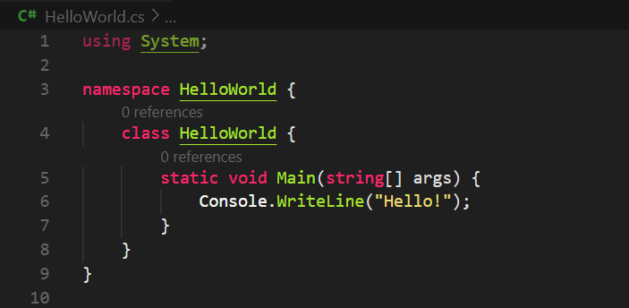
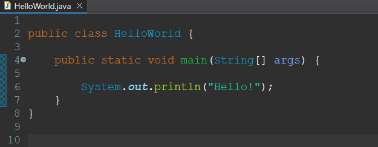
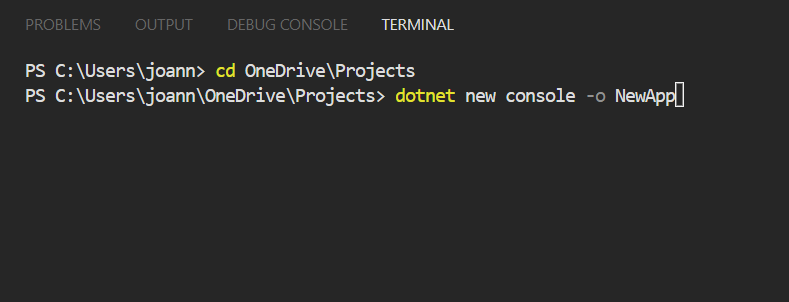
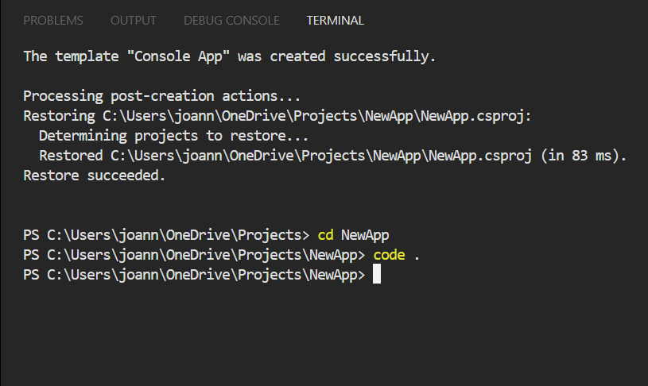
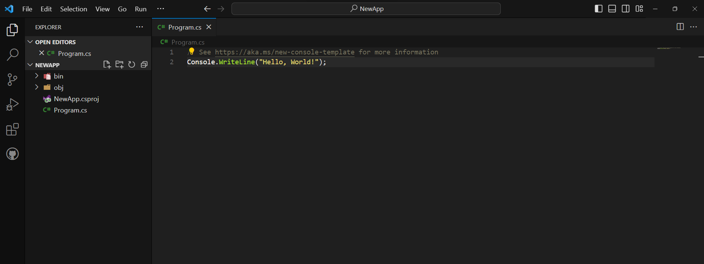
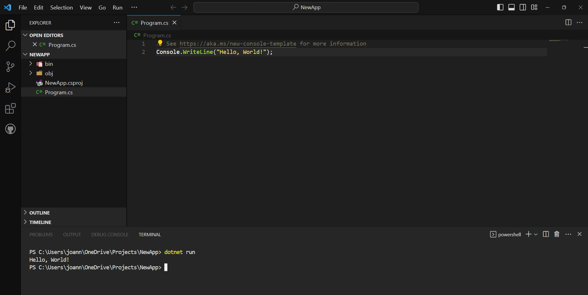
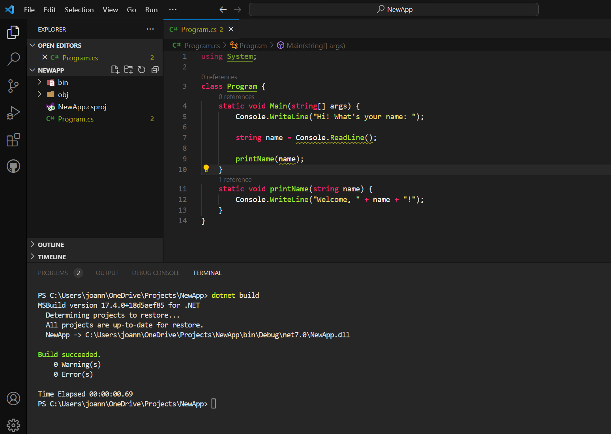

In the last 2 weeks I've been rigorously learning Microsoft's programming language, C#; typing away, running two hours of sleep and not seeing the light of day. Well, not really, I've been watching videos and reading up on websites about C# and nodding my head pretending like I know what's going on. But, I have learned quite a lot in those total of 5 hours of reading and nodding.
And you might be thinking, why C#? I collect programming languages like inifinity stones and enjoy the feeling of knowing them even if I only know 20% of each language I pick up.
Here's what I learned in the first few minutes:
Wait... Isn't this just a copy of Java?
Upon looking at the syntax, I found that C# is actually not too far from Java at all. Surprisingly C# doesn't quite fit in well with the other C languages and this is because it was made by Microsoft.


Jokes aside, C# is a more high-level language in comparison to C or C++, which makes C# a lot more programmer-friendly, in the sense that, the language pretty much does all the hard work for you thus, providing first-time programmers a better experience learning. Coming from a background in Java, I can say for myself that learning C# was definitely easier and faster than if I were to learn something like, C or C++.
Game Development Using C#
Just like Java, it allows an object-oriented style of programming. This is useful if you want to create web, desktop, or even mobile applications. C# is also great if you're learning game development for the first time. Unity, a game engine software that allows for developers to program 2D/3D games, uses C# but with a little added spice. Unity uses C# in its own way that provides the developers a way to do all types of game development things such as implementing physics, input handling, game object handling, etc. What's great about this is if you already know Unity, you can very much learn C# without the Unity part.
Setting up the environment
There are many ways to setting up your environment in order to program with C#. There are many IDEs for C# to choose from, but the easiest for me was using the source-code editor Visual Studio Code. You could also use Visual Studio IDE, but for my own preference, I went with VS Code when setting up my environment.
Setting up C# in VS Code was simple. First things first:
- We need the thing that C# actually needs to run: .NET
- C# extension on VS Code
This can be found somewhere on Microsoft's dotnet website that will give you different versions of .NET, as well as the recommended version.
By default, VS Code doesn't have built-in tools to support programming in languages like C#, but luckily that isn't an issue. VS Code has a feature to install extensions. Extensions are a way to acquire additional features that can help with coding even if it's just making your code look pretty!
On the Extensions tab or by pressing CTRL + SHIFT + X, search for the 'C#' extension made by Microsoft. This extension will give you all the tools you need to code, debug, compile and execute C# in VS Code!
Creating your first C# application
Create a new C# application by opening VS Code's terminal (CTRL + `). Before you create a new application, make sure you're in the preferred directory of where you want your application to be stored. This is done by a simple cd command followed by the path of your preferred directory.
Next, in the terminal, create your application:

Great! Now you've created a project folder the project name 'NewApp' or whatever you decided to call it. To open and code in your project, change to that project folder

In this newly created project folder, you'll see a Program.cs file. This file is provided by default upon creating a new C# project. You're free to remove this file and create a new one, or rename it whatever you want.

In Program.cs, some code that can be displayed on the console is already written for you! To run it, go into terminal (CTRL + `) and execute this command: dotnet run

When writing more complex code, you want to make sure that you're writing the right code. Using the 'dotnet build' command will allow you to compile your code.

Conclusion
C# is an object-oriented programming language that is developed and maintained by Microsoft. It runs on the .NET framework. It is a language that is easy to learn for beginners and can easily be picked up by experienced programmers that want to quickly learn a new languge. C# can be used to build a wide variety of applications from web to mobile, and can be used in game development. The best part of it all is that it is easy to set up so you can be well on your way in your programming journey!